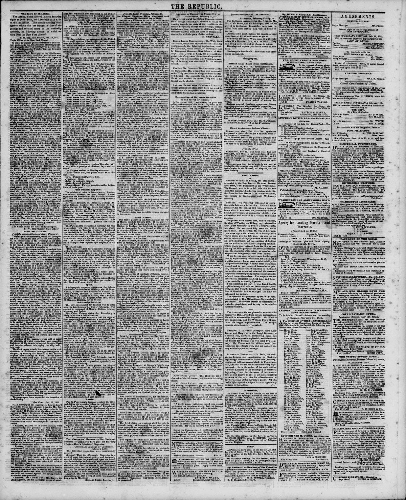

The fi\cd duties ou customs shall be paid in Spanish money
https://www.loc.gov/resource/sn82014434/1851-02-18/ed-1/?sp=3

See the original pageVer la página original
The newspaper reported that the country was tranquil and coffee was scarce. It also noted that the vessel Lysander brought a new ordinance, published at the Cape in the name of the emperor on January 22, which introduced important amendments to the customs law of 1828 regarding fixed duties, manifests, and consular certificates.
El periódico transmitió que el territorio permanecía sosegado y el grano de café escaseaba. Notificó además que el navío Lysander portó una flamante ordenanza promulgada en El Cabo a nombre del emperador con fecha 22 de enero, la cual introducía reformas sustanciales en la ley arancelaria de 1828 respecto a derechos fijos, sobordos y certificaciones consulares.
Where this standsEn qué punto está
The full text of this article is still being prepared. Until it is ready, this page carries a summary, the passage found on the page, and the link to the original, which is always one click away.El texto completo de este artículo aún se está preparando. Hasta que esté listo, esta página lleva un resumen, el pasaje encontrado en la página y el enlace al original, que siempre está a un clic.
The passage this summary was written fromEl pasaje del que se escribió este resumen
The passage where this article was found, copied from the newspaper page itself, reading errors and all. This is exactly what the summary above is based on.El pasaje donde se encontró este artículo, copiado de la propia página del periódico, con sus errores de lectura y todo. Esto es exactamente aquello en lo que se basa el resumen de arriba.
dates from Cape Ilaytien to the Jttli of January
The country was tranquil. Coffee scarce.
The Lyeandcr brings a new ordinance, published
at the Cape, in the name of the F.inpcror, on
the 22d of January, relative to important amendments
of the law of 1338, on customs.
The fi\cd duties ou customs shall be paid in
Spanish money, at the rate of live per cent, on the
Srosa proceeds on sales, without prejudice to the
uties on wliarfago and weighing. If the manifest
be presented without the ccrtihcatc of the llayticn
consul at the port of departure, the master of
the vessel shall pay one Spanish dollar per ton additional.
Two copies of every manifest, for verification,
are to be Delivered to the Ilayticn consular agent
at the place of departure. Article 1st to go into
force on the day of publication.
The other articles to be enforced in relation to
vessels from the American continent in three
months.?New Vork Jltrald.
From Cape Haytikm.?The f.ysander brings a
new ordinance, published at the Cnpe, in iho name
of the emperor, on the 2Sd of January, relative to
important amendments of the law of 182H on customs.
The fixed duties on customs shall he paid in
Spanish money, at the rate of five per cent, on the
gross proceeds on sales, without prejudice to the
duties of wharfage and woigbing. If the manifest
be presented without the certificate of the Haytien
consul at the port of departure, tho master i f the
vessrl shall pay one Spanish dollar per ton additional.
Two copies of every manifest for verification arc
to be delivered to the, llaytien consular agent :it
How to cite this articleCómo citar este artículo
The Republic. (1851). Washington [D.C.], February 18, 185118 de febrero de 1851. DR in the American PressRD en la Prensa Norteamericana. Library of Congress, Chronicling America: https://www.loc.gov/resource/sn82014434/1851-02-18/ed-1/?sp=3
ReferencesReferencias
Library of Congress, Chronicling America: The Republic, February 18, 185118 de febrero de 1851.
Send an observationEnviar una observación
Does this article connect with your family, your town, or something you know? Did we get something wrong? Write to us. Observations go to the editor's inbox and are read by a person.¿Este artículo conecta con su familia, su pueblo o algo que usted conoce? ¿Nos equivocamos en algo? Escríbanos. Las observaciones llegan al buzón del editor y las lee una persona.
Send observationEnviar observación